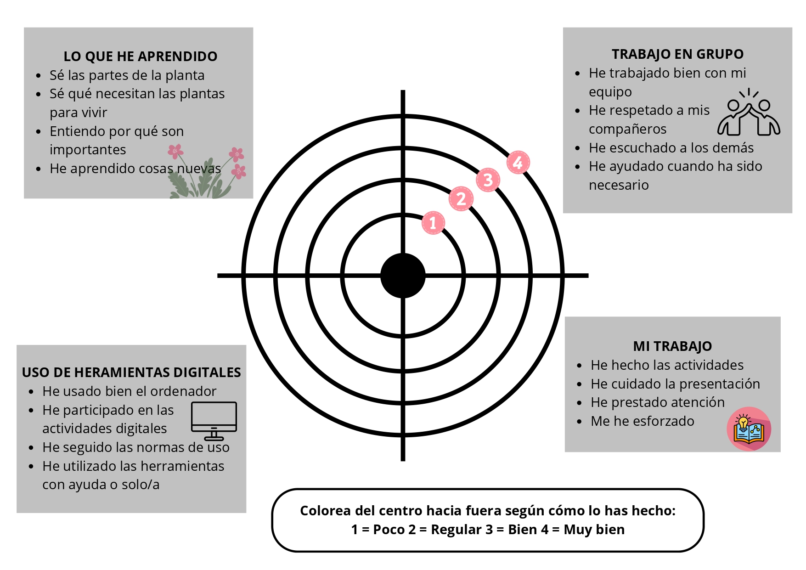
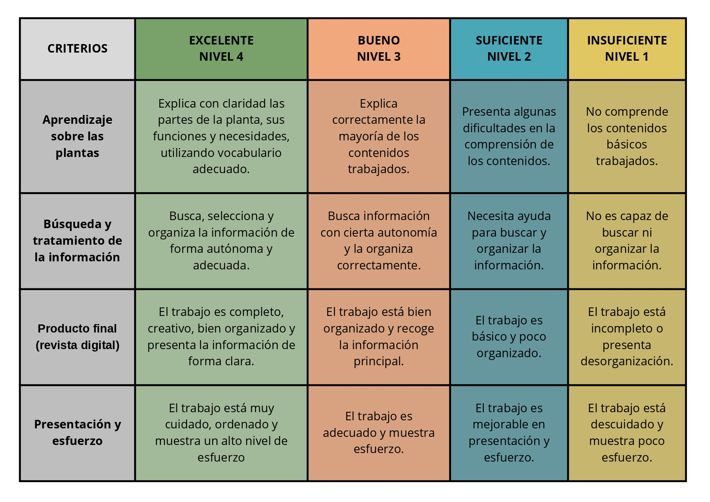

DIANA DE AUTOEVALUACIÓN
Hoy vas a convertirte en protagonista de tu propio aprendizaje. La diana de autoevaluación es una herramienta que te ayuda a mirar hacia dentro y responder a una pregunta muy importante: ¿qué tal lo estoy haciendo y qué puedo mejorar?
Con ella vas a reflexionar sobre tu participación en la Situación de Aprendizaje (SdA), lo que has aprendido y cómo estás avanzando. También te ayudará a conocer mejor los criterios con los que vas a ser evaluado. La vas a usar dos veces: a mitad de la SdA, para ver cómo vas hasta ahora, y al final, para comprobar tu evolución y tu mejora.
En la diana vas a valorar cuatro áreas: lo que he aprendido, el trabajo en equipo, el uso de herramientas digitales y tu propio trabajo. Dentro de cada una, tendrás pequeños ítems que deberás analizar con calma.
¿Cómo se hace? Muy fácil: piensa con sinceridad, valora tu nivel y marca dónde crees que estás. No hay respuestas “buenas” o “malas”, lo importante es ser honesto contigo mismo.
Recuerda: esta diana no es una prueba, es una brújula para ayudarte a mejorar, avanzar y convertirte en una versión aún mejor de ti en el aprendizaje.
A continuación, puedes ver la diana de autoevaluación:

RÚBRICA DE HETEROEVALUACIÓN
Durante esta Situación de Aprendizaje (SdA) vamos a utilizar una herramienta muy importante: la rúbrica de heteroevaluación.
Desde el inicio de la SdA, conocerás esta rúbrica, para que sepas desde el primer momento qué aspectos se van a evaluar y qué se espera de tu trabajo. Así podrás organizarte mejor y orientar tu esfuerzo desde el principio.
Esta rúbrica no solo servirá para poner una nota al final, sino que se utilizará a lo largo de todo el proceso. Nos ayudará a evaluar tu evolución en las diferentes actividades.
Se aplicará especialmente en: las actividades de investigación, el experimento y la elaboración del producto final (revista digital).
Esto significa que no solo se tendrá en cuenta el resultado final, sino también cómo trabajas, cómo avanzas y cómo vas mejorando durante toda la SdA.
El objetivo es valorar tanto el producto como el proceso, dándote la oportunidad de aprender y mejorar mientras trabajas.
